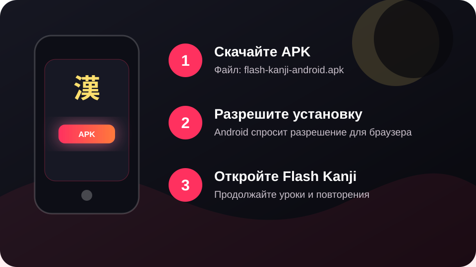

Android APK
Установка APK на Android

- Скачайте APK. Нажмите кнопку «Скачать APK для Android» на этой странице.
- Откройте файл. Android может попросить разрешить установку приложений из этого браузера или файлового менеджера.
- Подтвердите установку. После установки откройте Flash Kanji и продолжайте учить кандзи.
Если Android показывает предупреждение, проверьте, что файл скачан именно с flashkanji.space, и сравните SHA-256 при необходимости.